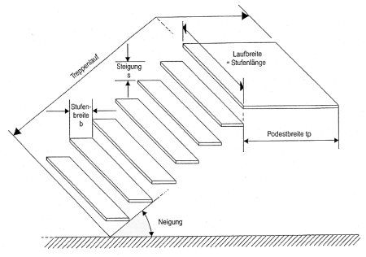
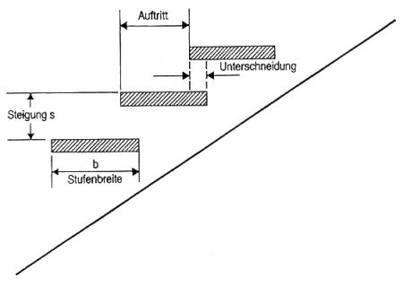
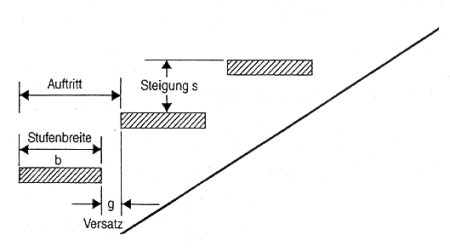

2.1 Treppen bei Bauarbeiten im Sinne dieser Regeln sind vorübergehend errichtete Baukonstruktionen, die als Zugang bei Bauarbeiten verwendet werden. Sie gliedern sich in
Die Bezeichnung der Einzelbauteile ist in DIN 18 064 "Treppen, Begriffe" enthalten.
2.2 Bautreppen im Sinne dieser Regeln sind ein- oder mehrläufige Treppen, die als Zugang bei Bauarbeiten verwendet werden.
2.3 Treppentürme im Sinne dieser Regeln sind mehrläufige Treppen, die aus serienmäßig hergestellten Bauteilen bestehen und turmartig ausgebildet sind.
2.4 Gerüsttreppen im Sinne dieser Regeln sind Treppen aus serienmäßig hergestellten Gerüstbauteilen, die als Zugang zu Arbeits- und Schutzgerüsten verwendet werden.
2.5 Schrittmaß im Sinne dieser Regeln ist ein ergonomisches Maß für das Steigungsverhältnis von Treppen. Es ist die Summe aus einem Auftritt und zwei Steigungen.
Formel: Auftritt + 2 Steigungen = 63 ± 10%

Bild 1: Maßbegriffe einer Treppe

Bild 1b: Treppe mit Unterschneidung

Bild 1c: Treppe mit Versatz